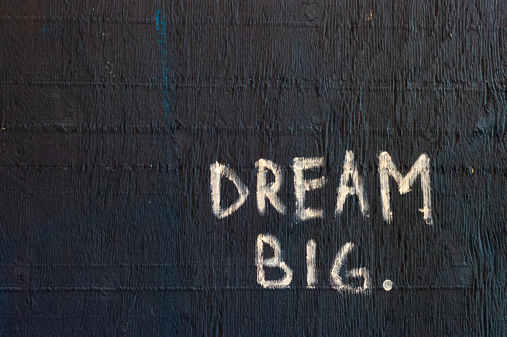

Inspiratie
Graag wil ik je meer vertellen waar mijn inspiratie vandaan komt. Altijd ben ik al gefascineerd geweest door de website van Apple. Een website maken zoals die van hen is ook een persoonlijke goal voor mezelf. Dat ligt misschien voor nu nog wel ver in de toekomst, maar het is iets wat ik heel graag zou willen kunnen maken.
Waarom perse die van Apple denk je misschien, nou de manier waarop zij websites maken vind ik heel mooi. Ik zal even opnoemen wat ik goede punten van de Apple website vind.
- Strak design
- Veel interactie
- Mooie filmpjes en korte uitleg
- Het voelt alsof je een cadeautje uitpakt
Om kort de punten toe te lichten, het is een mooi en straks design en dat spreekt klanten natuurlijk aan. Je hebt veel interactie met filmpjes en AR content om uit te proberen, dat houd het voor de klant ook interessant. Met het voelt alsof je een cadeautje uitpakt bedoel ik dat ze het vooral spannend maken voor de klant. Ze laten van alle hoeken iets inspringen of tevoorschijn komen en ook dat maakt het wel heel interessant.
Uiteindelijk is het natuurlijk een kwestie van smaak, maar ik vind het echt een inspiratiebron voor mijzelf en het geeft mij heel veel motivatie om veel te leren en mooie dingen te maken. Check zelf ook zeker eens hun website --> Apple website
Photo copyright free from unsplash.com